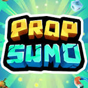
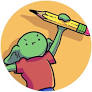

Over Mij
Mijn naam is Wouter Joosse!
In mijn vrije tijd doe ik vooral dingen die te maken hebben met software development en games spelen.
De laatste jaren is mijn interesse in hoe alles in elkaar zit in die sector erg toegenomen.
Daarom heb ik voor een ICT opleiding gekozen. De games die ik het meest interessant en leuk vind zijn vooral
degene die echt een indruk maken,
bijvoorbeeld games als Outer Wilds, die ik mijn favoriete zou noemen.
Ik houd me tegenwoordig ook graag
bezig met het playtesten van games van anderen.
Dit doe ik sinds 2025. Ik vind dat leuk, omdat je een gevoel krijgt dat je niet alleen het spel eerder (en
gratis) kan spelen, maar ook een deel uit kan
maken van hoe het er uiteindelijk uit gaat zien.
De games die ik heb geplaytest zijn:
- Prop Sumo
- Beetleball
- Isle Goblin


Vroeger heb ik ook mods gemaakt voor de game Antimatter Dimensions. Éen daarvan zat ook op mijn GitHub profiel, maar inmiddels niet meer. Ik maak ze wel nog steeds en ik vind het ook nog steeds leuk om te doen, vooral nu dat mijn kennis over JavaScript vergroot is met PBA.